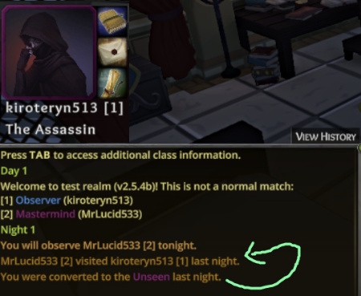
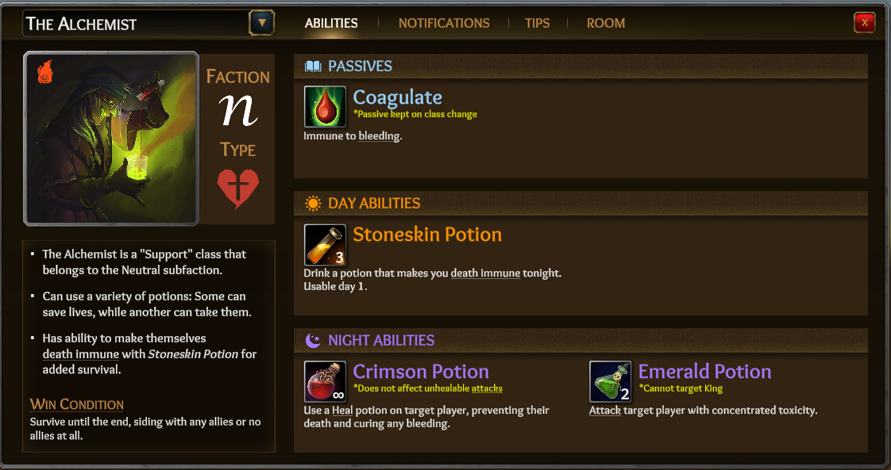

Patch v2.6.0: Tons of Good ****
Summary
- Tons of notable, class-specific bug fixes.
- Added some basic stats to lobby “Account” section.
- Revamped nearly all non-iconic icons.
Class Fixes/Balance
- Fixed a bunch of convert abil bugs:
- Both Observer/Princess night abils now show feedback upon convert.
- Redirecting into someone being converted will now show feedback, as well.
- Since this was a shared fix, there are likely other “feedback+convert” combo bugs that will magically resolve from this.

- Suicide toggle message no longer shows to evil King.
- Reaper’s Gather Darkness abil will no longer desync via a visual bug when attempting to cancel.
- The way day abilities cancel were backend-revamped, allowing more abilities to cancel and with proper feedback messages, as follows (some fixes, some additions):
- Reaper’s Gather Darkness abil is now [properly] cancelable + displays cancel feedback msg.
- Alchemist’s Stoneskin abil is now cancelable + displays cancel feedback msg.
- Chronomancer’s Pocket Dimension abil is now cancelable + displays cancel feedback msg.
- Physician/Ritualist/Herbalist’s Exhume abils are now cancelable + displays cancel feedback msg.
- Mercenary’s Don Armor is now cancelable + displays cancel feedback msg.
- TrollBox abils now displays cancel feedback msg.
- …and probably others I forgot to list just for flavor text.
- Sellsword no longer wins with BD King.
- Maid’s Nosy Servants abil can now target reaped/soulless dead players.
- Heal abils will now properly say “did not require” instead of “could not” when healing someone being defended by a Knight.
- Aristocrat’s Intrigue abil no longer spam framed Heal abil feedback 2x. This will likely also fix related, gossip-like 2x spam bugs.
- Hunter’s Bear Companion abil priority lowered to ensure abils like Defend and Safeguard don’t take priority.
- Fixed Poss Facelift often [unintentionally] showing default disguise when canceling or changing beyond the 1st choice.
- Fixed Debauchery-type abils that was causing targets that had an active, targeted abil to randomly become redirect immune.
- Prince, Butler and possibly another [Hunter?] no longer announce suicide messages (from using a shared mechanic).
- Inquisitor’s Holy Blessing passive abil renamed to Relentless Pursuit.
- Removed the cringy salesman text for the Assassin’s 2-for-1 abil for hovering, but kept it in the full description.
- (More below @ v2.6a + v2.6b addendums)
Stats
- There is now a stats summary section under “Account” (screenshot below).
- We will add on to this later. We actually track tons of per-class stats, but we haven’t tested them for accuracy, yet.

(The stats above are from test accounts, so ignore the math )
)
Class Cards, Text, Icons
-
Swapped out most all ability icons for better, higher-quality, more-relevant ones (don’t worry – we kept the iconic ones). Demo below:
 - Removed the bloaty Hover tab by popular request.
- Removed or swapped out some obsolete tips/class summaries.
- Swapped mentions of Psychic to Mystic in class card tips.
- Made the infinity symbol for # charges for less-awkward sizing/alignment compared to numbers.
- Got rid of the outline on # charges to look more “clean” (and ensured every icon corner has a dark corner area for visibility) + moved it to the bottom-right corner.
- Mass changed wording of “themself” to “themselves” in class cards and feedback because OCD.
- Updated tutorial to use the new icons/size/style.
- Newcomer tips will no longer be displayed in the tutorial since players don’t even get access to logs until later.
Game Over
- Added a new victory and defeat theme song (30s) to make game over more satisfying.
- Faded in the winner screen background/text/logo on separate timers to look less '90s.
- Added the end screen music back (not sure when it went away).
General
- Removed live game “disconnected/gray” names to prevent numerous forms of metagaming.
This is why we can’t have nice things. - Online friends list buttons will now disable if they’re starting or in-game. You may still invite users at the end screen or login screen (showing just ‘Online’) to queue up an invite.
-
Newcomer tips are now displayed by starting with an
*asterisk and displayed in a gray-blue color. - The daily Newcomer reminder tip to log actions+results now fits on 1 line for most default chat layouts to be less annoying while we burn this meta in new player minds

- Fixed lobby “Customize” header from showing the wrong highlighted header when swapping out and back in.
- Fixed class cards from showing up too early on the loading screen via TAB (that could cause issues if not fully loaded).
- Set max cap on tutorial whisper box to prevent freeze for someone who would oddly paste thousands of characters inside.
More
See addendums below for hotfixes.
Dev Notes
- Last patch fixed the FPS drops and we were able to keep the lighting quality upgrade, woot! Best of both worlds! One day, I’ll completely revamp lighting completely at minimal FPS cost (I know a way - just need the time to do it).
- This was supposed to be a pure bug fix patch, but distractions happen. Oops Hope you enjoy the sweet distractions on top of the bug fixes. We’re really excited about these new icons that actually fit way better than the old ones (no more Inquisitor attacking people with spears).